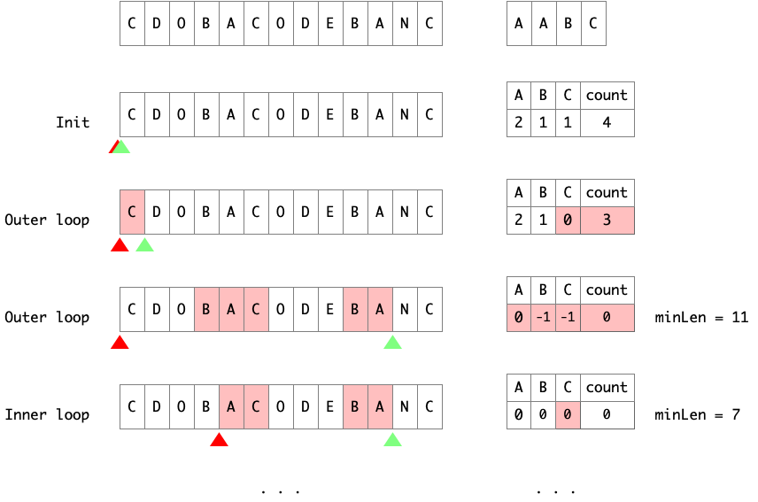

Sliding Window on Substring
For most substring problem, we are given a string and need to find a substring of it which satisfy some restrictions. A general way is to use a hashmap assisted with two pointers.
The general idea is that we can alternatively slide end and begin pointers and stop end once the substr between two pointers satisfies the requirement, then slide begin until breaks the requirement.
- Find the first valid substring (move
endpointer only) - Slide window to find the shortest valid substring (move both
beginandendpointer)
1 | int findSubstring(string s){ |
When asked to find maximum substring, we should update maximum after the inner while loop to guarantee that the substring is valid. On the other hand, when asked to find minimum substring, we should update minimum inside the inner while loop.
Related problems:
- Longest Substring - Without Repeating Characters
- Shortest Substring - At Most 2 Distinct Characters
- Shortest Substring - Contains the Anagram of a String
- All Substrings - Concatenation of Strings
- All Substrings - Anagram of a String
Minimum Substring Contains Certain Target String Characters
Given a string S and a string T, find the minimum window in S which will contain all the characters in T in complexity O(n).
"CDOBACODEBANC","AABC" -> "ACODEBA"

1 | string minWindow(string s, string t) { |